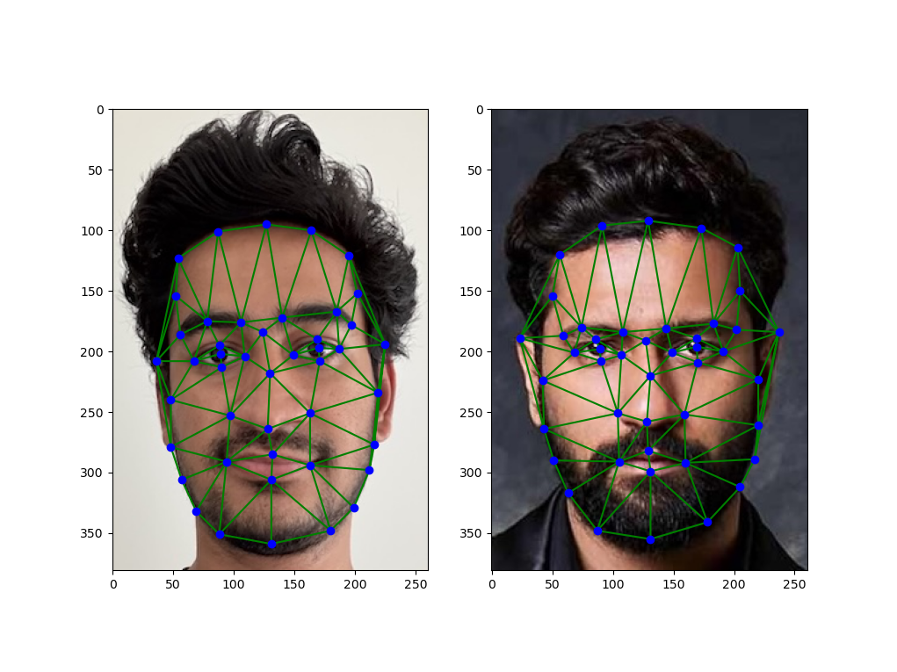
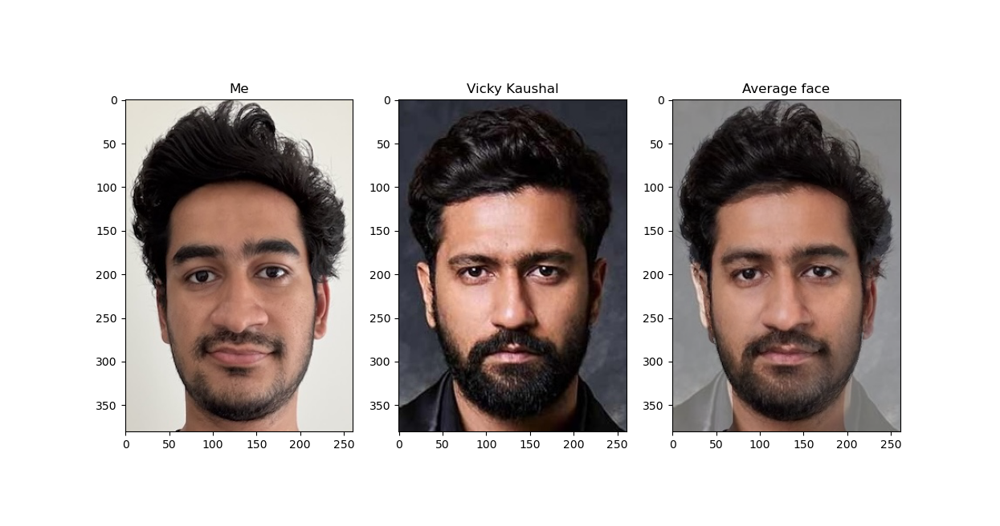
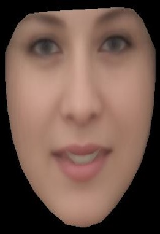
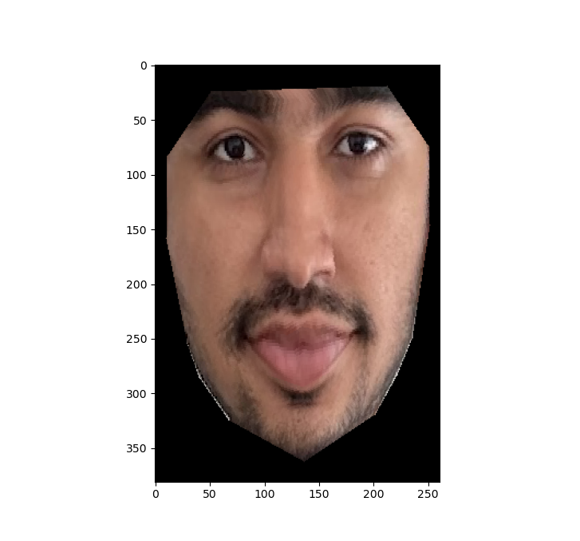
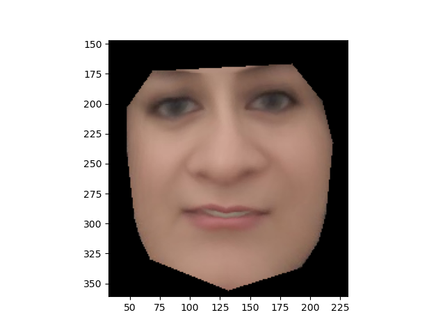
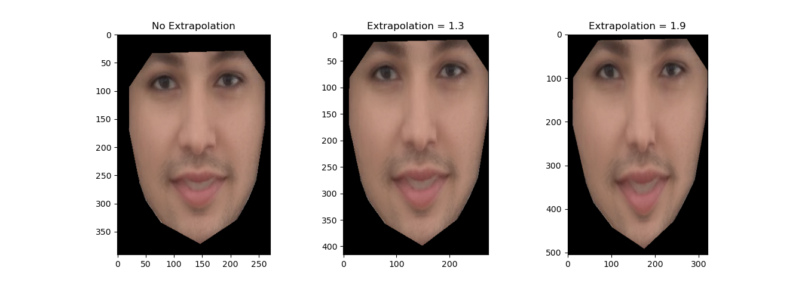
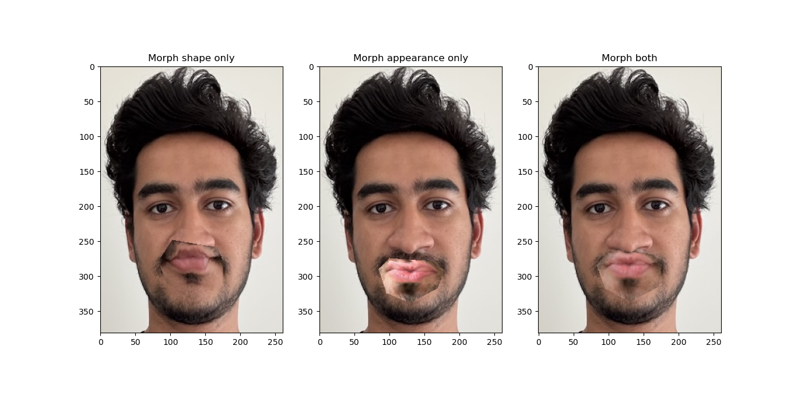
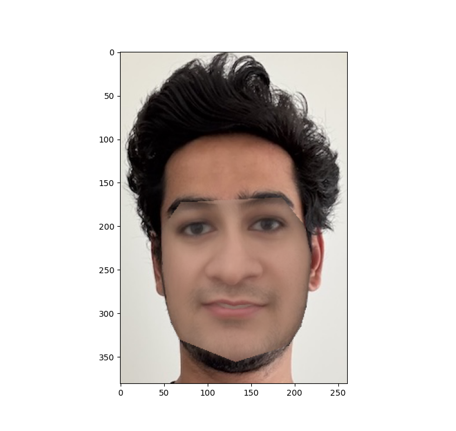

First, facial keypoints were matched with my image and the target image that I want to morph to. This is needed to create correspondences for triangulation and morphing. Below is an image of the keypoints and the triangulation on both images. The image on the left is me and the right is the target image. The points in blue are the facial keypoints that were selected and the green lines show the triangulation. Delaunay triangulation algorithm was used to generate the triangulation.
First, the average face shape was computed by averaging the keypoints on both faces. Next, both faces were warped into that average shape by computing the affine transformation matrix for each triangle on the image to the target face shape. Finally, the colors were averaged using inverse warping. Inverse warping was used so that the destination image does not have any "holes". This mapping would potentially map to partial pixels therefore needing interpolation to get the average color. Below is the average image that was computed using the above mentioned algorithm.
The algorithm mentioned in part 2 was used to create a morph sequence. The image was slowly morphed by adjusting 2 parameters which were coded into the morph function - wrap_frac and dissolve_frac. wrap_frac controls the amount of morphing and dissolve_frac controls the weighted averaging of the colors between the 2 images. These parameters go from 0 to 1. The resulting gif is shown below. The gif can be restarted by clicking on it.
Below is another morph of me and Ajay Devgn (a famous bollywood actor).
First, a sub-dataset was curated by me from the Helen dataset. This would represent the population. I picked the subset to be women images from the dataset. Next, using the keypoints provieded in the dataset, I created an average face of the women population. The subset consisted of 103 images, conprising of mainly caucassian women. Below is the mean face that I got.
My face was morphed into the average women's face shape. Below is the result.
The average women's face was morphed into my face shape. Below is the result.
Using the average face of the population that I constructed in the previous part, I created a caricature of my face by extrapolating from the population mean. By increasing the extrapolation factor, the differences were made more prominent. Below is the result. As seen, my face was made thinner, longer and lighter.
I change my expression to create a pouting face thereby creating an effect of lip-syncing. Below is an image showing the results if only expression shape morphing was done, if only appearance morphing was done and finally a blend of both.
Below is a gif showing the seamless transition from a neutral smile to a pouting expression on my face. I also tried to color match to my lip color as much as possible. Feel free to click on the gif to replay it.
I lightened my skin tone and smoothened my face. Below is the result.
